1. Instalación de OSGeoLive¶
Todas las herramientas necesarias están disponibles en OSGeoLive.
Importante
Antes de asistir a un taller, asegúrate de que puedes utilizar OSGeoLive mediante cualquiera de los dos métodos o Apéndice: Instalación en tu computadora.
En este taller se utiliza OSGeoLive en VirtualBox.
1.1. Instala VirtualBox.¶
Esta es una descripción general sobre cómo instalar VirtualBox. Puedes encontrar información detallada sobre la instalación en la documentación de VirtualBox.
Distribuciones de Linux:
Añade la siguiente línea a tu archivo /etc/apt/sources.list. Según tu distribución, sustituye <mydist> por el nombre de tu distribución.
deb https://download.virtualbox.org/virtualbox/debian <mydist> contrib
Añade las claves:
wget -q https://www.virtualbox.org/download/oracle_vbox_2016.asc -O- | sudo apt-key add -
wget -q https://www.virtualbox.org/download/oracle_vbox.asc -O- | sudo apt-key add -
Instala VirtualBox siguiendo estos pasos:
sudo apt-get update
sudo apt-get install virtualbox-6.1
Puedes encontrar información más detallada y actualizada aquí
1.2. OSGeoLive en VirtualBox¶
1.2.1. Descargar OSGeoLive 17¶
Este método de instalación corresponde a la distribución iso de OSGeoLive. Para otras instalaciones, visita OSGeoLive
Nota
Es posible que las imágenes de esta sección no se correspondan con la versión de VirtualBox u OSGeoLive instalada en tu sistema, pero el procedimiento es similar.
De https://download.osgeo.org/livedvd/releases/17/
Descargar osgeolive-17-amd64.iso
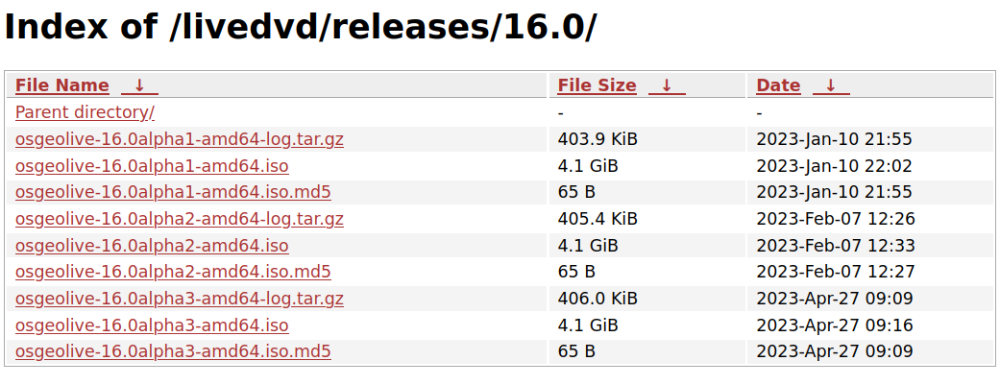
La descarga se guarda en el directorio «Descargas».
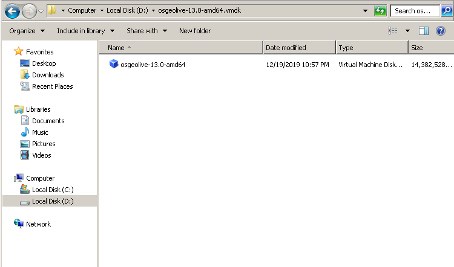
1.2.2. Crear la máquina virtual¶
Abre VirtualBox
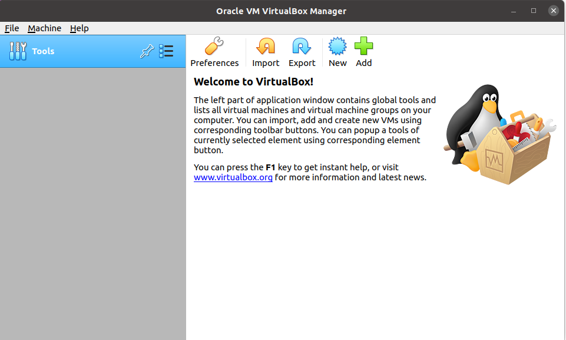
Haz clic en New y rellena con la siguiente información
Name: OSGeoLive 17
Type: Linux
Version: Ubuntu (64-bit)
Memory size: 4096
Hard disk: Create a virtual hard disk now
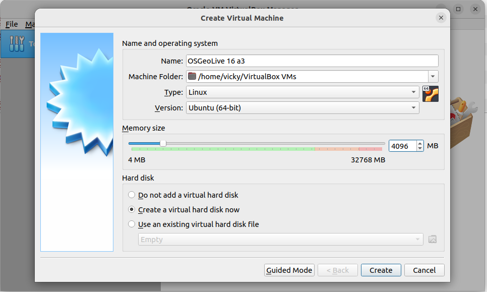
Haz clic en Create y rellena con la siguiente información
File location: Choose a suitable location for the Virtual Hard Disk
File size: 10.0GB
Hard disk file type: VDI (VirtualBox Disk image)
Storage on physical hard disk: Dynamically allocated
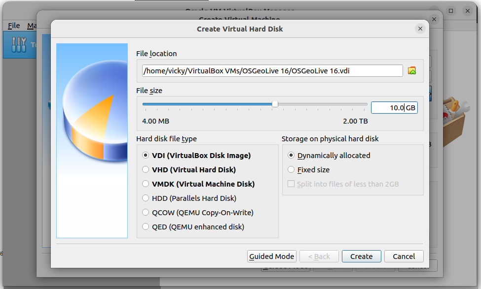
1.2.3. Instalar la imagen ISO de OSGeoLive¶
En la sección «Almacenamiento» se lee lo siguiente:
- Controlador:
IDE
- Dispositivo secundario IDE 0:
[Optical Drive] Empty
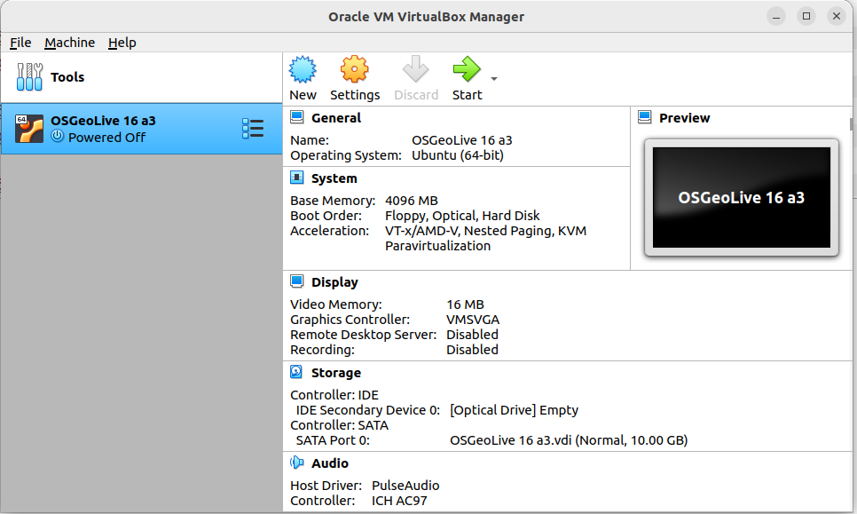
Choose Storage from the virtual box traits and click on Empty
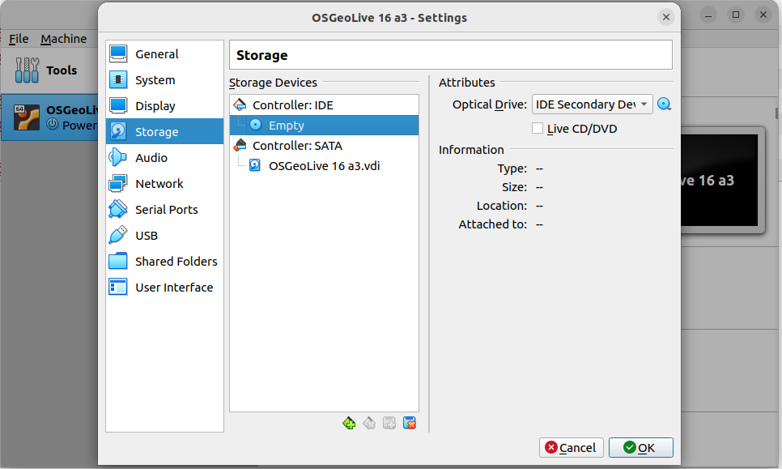
Click on the small disk icon and select Choose/Create a Virtual Optical Disk
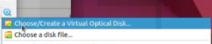
Accede a la ubicación donde se instaló el archivo ISO
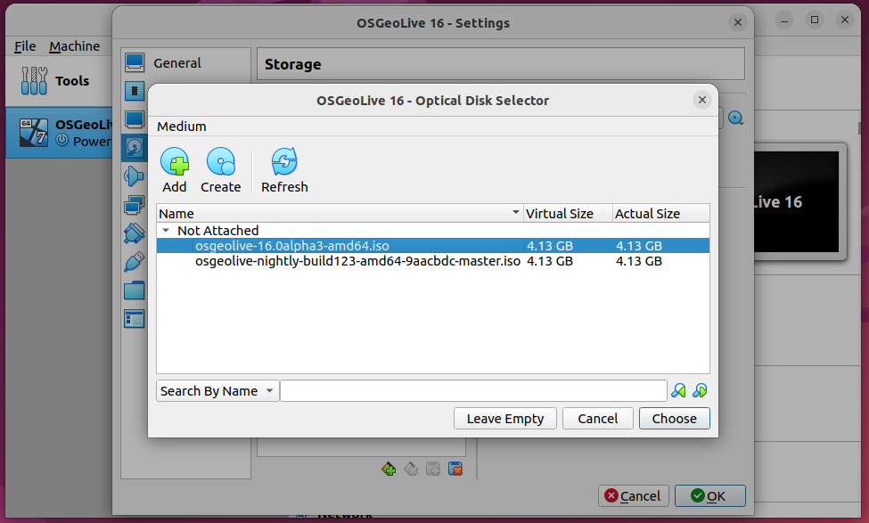
Instead of Empty now it has the ISO installed
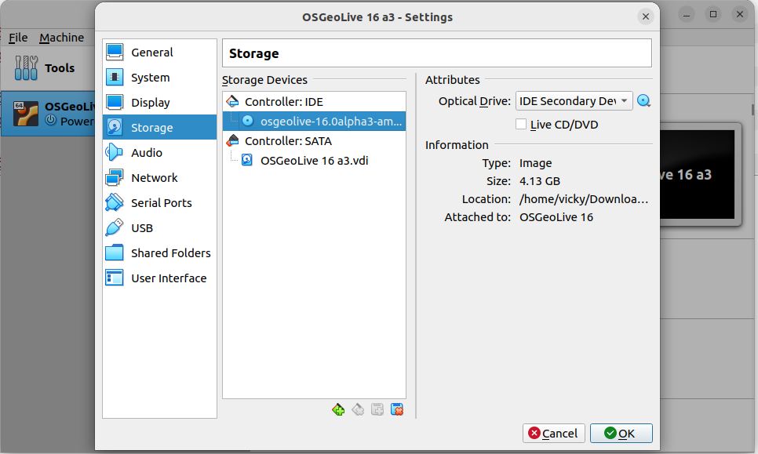
Ahora, la instalación dice lo siguiente:
- Controlador:
IDE
- Dispositivo secundario IDE 0:
[Unidad óptica] osgeolive-10.0alpha3-amd64.iso (4,13 GB)
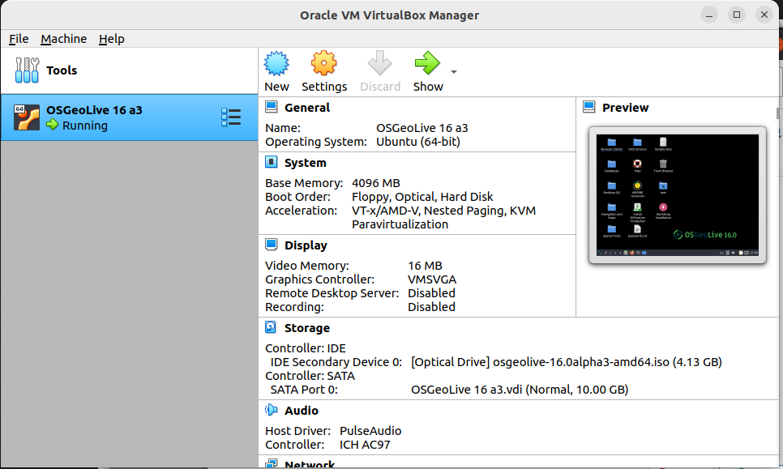
1.2.4. Iniciar OSGeoLive¶
Click on Start button and then on capture button to capture the mouse
movements
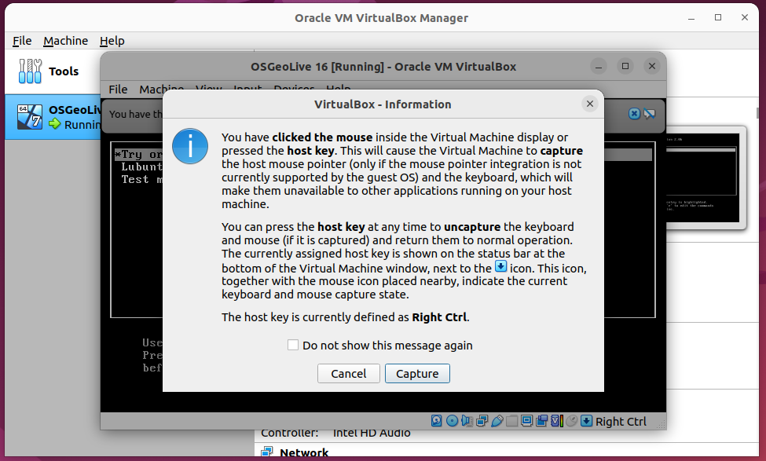
Haz clic en Try or Install Lubuntu
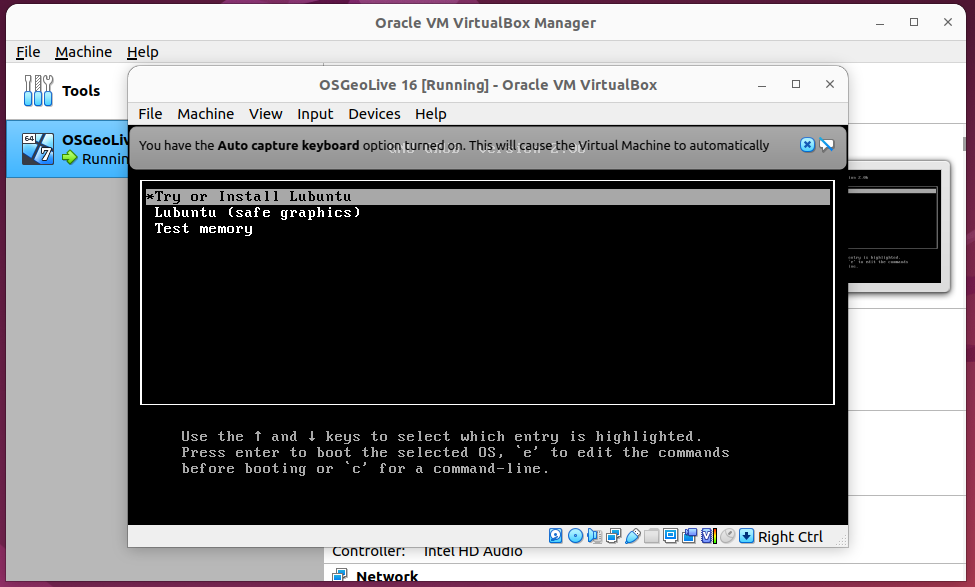
Nota
La cuenta de OSGeoLive es user y la contraseña es user
En unos segundos se iniciará OSGeoLive
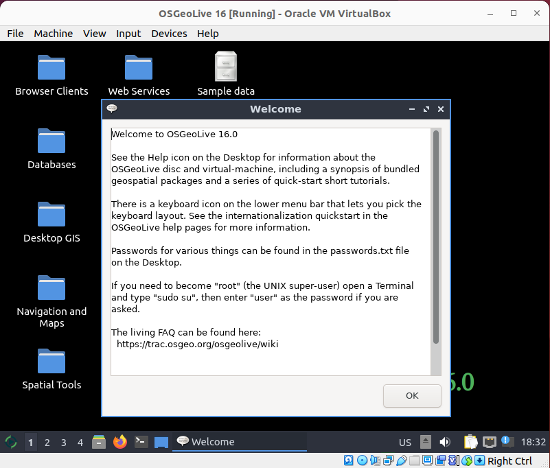
Nota
La cuenta de OSGeoLive es user y la contraseña es user
1.3. Instalación de Ubuntu¶
Actualizar las fuentes para incluir PostgreSQL
curl https://www.postgresql.org/media/keys/ACCC4CF8.asc | sudo apt-key add -
sudo sh -c 'echo "deb http://apt.postgresql.org/pub/repos/apt/ \
$(lsb_release -cs)-pgdg main" > /etc/apt/sources.list.d/pgdg.list'
Instalar PostgreSQL, PostGIS y pgRouting
sudo apt-get update
sudo apt-get install -y \
osm2pgrouting \
postgresql-15 \
postgresql-15-postgis-3 \
postgresql-15-postgis-3-scripts \
postgresql-15-pgrouting